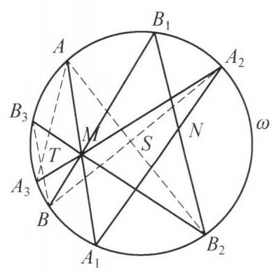

20 例 3：圆上三点切线交点与三线共点
20.1 题目
已知 A, B, C 为圆 \omega 上任意三点, M, N 为平面上任意两点, {AM} 与 \omega 的另一个交点为 {A}_1,{A}_{1}N 与 \omega 的另一个交点为 {A}_2,{A}_{2}M 与 \omega 的另一个交点为 {A}_3 . 类似定义 {B}_1,{B}_2,{B}_3,{C}_1,{C}_2,{C}_3 . 证明: A{A}_3, B{B}_3, C{C}_3 三线共点.

图 3-2
20.2 参考解答
如图 3-2,只需证明: A{A}_3, B{B}_3,{MN} 三线共点,因为同理也有 A{A}_3, C{C}_3,{MN} 三线共点,于是 A{A}_3, B{B}_3, C{C}_3 三线共点于 A{A}_3 与 {MN} 的交点.
设 A{B}_2 与 {A}_{2}B 交于点 S, A{A}_3 与 B{B}_3 交于 T .
对六边形 A{A}_3{A}_{2}B{B}_3{B}_2 ,用帕斯卡定理,知 T , S, M 三点共线.
对六边形 {A}_1{A}_{2}B{B}_1{B}_{2}A ,用帕斯卡定理,知 M , N, S 三点共线.
所以, M, N, T 三点共线.
即 A{A}_3, B{B}_3,{MN} 三线共点. 原问题得证.
注:对于圆上点较多的情形，可以考虑用帕斯卡定理证明共线.
20.3 解题思路与分析
这个证明初看确实像“神来之笔”——突然引入直线 MN，又凭空构造出交叉弦交点 S，两次帕斯卡定理一摆就证完了。但实际上，如果把它的思维过程拆解开，你会发现每一步都是被题目条件“逼”出来的必然选择。
我们可以从初等几何的逆向破题手筋和射影几何的高观点背景两个维度，完整还原这个证明的诞生过程：
20.4 一、 初等破题还原：如何一步步凑出这两个六边形？
20.4.1 第 1 步：利用对称性“消元”（为什么想到拉入直线 MN？）
原题有 A, B, C 三个起点，每个起点经过 3 次连线投射，圆上共有 12 个点。如果同时处理 A, B, C 三组点，图形会复杂到无法下手。
破题的第一直觉是寻找不动点： * 既然 A, B, C 是圆 \omega 上任意三点，说明不管起点怎么变，所有形如 XX_3 的直线都会交于同一个定点（记为 T）。 * 这个定点 T 的位置只能由题目中固定的元素决定。题目里固定的元素只有：圆 \omega、点 M、点 N。 * 由圆和两个定点构成的图形，天然关于直线 MN 对称（或在射影意义下以 MN 为唯一特征直线），因此这个公共交点 T 必然落在直线 MN 上！
一旦猜到交点在 MN 上，就可以立刻把点 C 彻底扔掉： 只要能证明任意两条线 AA_3 与 BB_3 的交点 T 落在 MN 上，就说明 BB_3 必过“AA_3 与 MN 的唯一交点”；同理，CC_3 也必过“AA_3 与 MN 的唯一交点”。这样，原本 12 个点的“三线共点”问题，瞬间降维成了 8 个点的“M, N, T 三点共线”问题。
20.4.2 第 2 步：帕斯卡定理的“8点困境”（为什么要分两次用？）
把点 C 拿掉后，圆上还剩 8 个点：A, A_1, A_2, A_3 和 B, B_1, B_2, B_3。我们把已知的弦交点按生成步骤列出来： 1. 第 1 步（过 M）：AA_1 \cap BB_1 = M 2. 第 2 步（过 N）：A_1A_2 \cap B_1B_2 = N 3. 第 3 步（过 M）：A_2A_3 \cap B_2B_3 = M 4. 第 4 步（交于 T）：A_3A \cap B_3B = T
我们要证 M, N, T 共线。圆上多点共线问题首选帕斯卡定理，但这里有一个致命障碍： * 观察点 A 的轨迹：A \xrightarrow{M} A_1 \xrightarrow{N} A_2 \xrightarrow{M} A_3 \xrightarrow{T} A，这是一个4 步闭环（圆内接四边形）；点 B 也是同样的 4 步闭环。两边合起来有 8 个点。 * 而帕斯卡定理只能处理 6 个点（本质上是两组 3 步折线交错闭合而成的六边形）。 * 如果你想用一次帕斯卡定理直接算出 M, N, T 共线，生成 N 需要用到 \{A_1, A_2, B_1, B_2\}，生成 T 需要用到 \{A, A_3, B, B_3\}——这两组点完全不相交，根本拼不成一个六边形！
20.4.3 第 3 步：“连对角线剖分”逼出辅助点 S
在初等几何里，当我们手头只有处理“三角形（3 顶点）”的工具，却遇到了“四边形（4 顶点）”时，最标准的操作是什么？连对角线，把四边形剖分成两个三角形！
对于四边形折线 A - A_1 - A_2 - A_3 - A 和 B - B_1 - B_2 - B_3 - B，我们从中间节点 A_2, B_2 处将其切开，分成前半段（第 1、2 步）和后半段（第 3、4 步）：
- 前半段（第 1、2 步）：
- 包含折线 A - A_1 - A_2 和 B - B_1 - B_2，共有 6 个点 \{A, A_1, A_2, B, B_1, B_2\}。
- 已知两组对边交点：AA_1 \cap BB_1 = M，A_1A_2 \cap B_1B_2 = N。
- 为了把这两条折线首尾相连闭合成一个圆内接六边形 A A_1 A_2 B B_1 B_2 A，唯一缺失的第三组对边就是将首尾交叉连接：连结 A_2B 和 B_2A！
- 设这两条交叉弦的交点为 S，对这个六边形用帕斯卡定理，立刻得到：M, N, S 共线。
- 后半段（第 3、4 步）：
- 包含折线 A - A_3 - A_2 和 B - B_3 - B_2，同样只有 6 个点 \{A, A_3, A_2, B, B_3, B_2\}。
- 已知两组对边交点：AA_3 \cap BB_3 = T，A_3A_2 \cap B_3B_2 = M。
- 为了把这两条折线首尾相连闭合成六边形 A A_3 A_2 B B_3 B_2 A，它的首尾端点依然是 A, A_2 和 B, B_2！
- 所以，用来闭合它的第三组对边，自动就是刚才那两条交叉弦 A_2B 和 B_2A（交点依然是同一个 S）！对这个六边形用帕斯卡定理，立刻得到：T, M, S 共线。
- 点 M 出现两次的“焊接”作用：
- 为什么题目要求第 1 步和第 3 步都经过同一个点 M（即 M \to N \to M）？
- 假设第 1 步过的是 M_1，第 3 步过的是 M_3，那我们只能推出“M_1, N, S 共线”和“T, M_3, S 共线”，这两条线在点 S 处是折断的。
- 恰恰因为 M_1 和 M_3 是同一个点 M，前半段的帕斯卡线（直线 MS）与后半段的帕斯卡线（也是直线 MS）拥有两个公共点 M 和 S，从而被死死“焊”成了同一条直线！因此 M, N, T, S 四点共线。
破题小结：辅助点 S = AB_2 \cap A_2B 绝非凭空捏造，它是将 4 步闭环拆分为前后两个 3 步闭环时，公共边界顶点 \{A, A_2\} 与 \{B, B_2\} 唯一能连出的“公共对角线交点”。
20.5 二、 高观点降维打击：这道题的射影几何与群论本质
如果你从圆上的对合变换（Involution）与群论共轭的视角来看，就能一眼看穿这道题的构造源码：
定义圆上的中心对合变换： 对于平面上任意定点 P，我们可以定义一个圆 \omega 到自身的映射 i_P: \omega \to \omega，它将圆上任意一点 X 映为直线 XP 与圆 \omega 的另一个交点。 显然，连做两次回到原地，即 i_P^2 = \text{id}（恒等变换），这在射影几何中称为以 P 为中心的透视对合（Desargues/Frégier 对合）。
题目的生成过程就是“共轭变换”： 按题意，从 A 到 A_3 的三次连线操作，写成映射复合就是： A_3 = (i_M \circ i_N \circ i_M)(A) 记复合变换 f = i_M \circ i_N \circ i_M。
对合的共轭依然是对合： 在群论中，一个 2 阶元（对合 i_N）被另一个 2 阶元（对合 i_M）共轭后，得到的依然是 2 阶元！直接验证： f^2 = (i_M \circ i_N \circ i_M) \circ (i_M \circ i_N \circ i_M) = i_M \circ i_N \circ \underbrace{(i_M^2)}_{\text{id}} \circ i_N \circ i_M = i_M \circ \underbrace{(i_N^2)}_{\text{id}} \circ i_M = i_M^2 = \text{id} 这说明，复合映射 f: A \mapsto A_3 本身也是圆 \omega 上的一个射影对合变换！
Frégier 定理直接给出共点结论： 射影几何中的 Frégier 定理指出：圆（或任意非退化二次曲线）上的任何一个对合变换，都必然存在唯一的一个“对合中心” T，使得所有对应点连线 X f(X) 都经过定点 T。
- 因为 A_3 = f(A),\ B_3 = f(B),\ C_3 = f(C)，所以弦 AA_3, BB_3, CC_3（乃至圆上任意一点 X 生成的 XX_3）都必然交于对合 f 的中心 T！
- 不仅如此，在射影平面 \mathbb{RP}^2 中，i_M 是以 M 为中心、以 M 关于圆 \omega 的极线 m 为轴的调和透射（Harmonic Homology）。将对合中心 N 通过 i_M 进行共轭，新的对合中心 T 就是点 N 在调和透射 i_M 下的像——即点 T 必然落在直线 MN 上，且 T, N 关于点 M 与极线 m 调和共轭！
命题人正是利用“对合变换的共轭仍是对合”这一射影几何性质设计出了题目，再通过将 4 步路径对角剖分为两个帕斯卡六边形，将其包装成了一道纯初等几何竞赛题。
20.6 分步证明
20.6.1 步骤 0：已知构型与交点生成
已知 A, B, C 为圆 \omega 上任意三点，M, N 为平面上任意两点。 从点 A 出发，依次通过定点 M, N, M 作割线： ① 割线 AM 与圆交于 A_1； ② 割线 A_1N 与圆交于 A_2； ③ 割线 A_2M 与圆交于 A_3。 同理，从点 B 出发依次得到 B_1, B_2, B_3。 求证：AA_3, BB_3, CC_3 三线共点。
20.6.2 步骤 1：目标转化：只需证明 AA₃, BB₃, MN 三线共点
设直线 AA_3 与 BB_3 相交于点 T。 若能证明点 T 恒在定直线 MN 上（即 M, N, T 三点共线）： 则交点 T 的位置完全由割线生成路径及定点 M, N 决定，不依赖于所选的特定点对。 同理必有 AA_3 与 CC_3 亦相交于直线 MN 上的唯一点 T，从而原命题即等价于证明： M, N, T 三点共线（即 AA_3, BB_3, MN 三线共点于 T）。
20.6.3 步骤 2：引对边交点 S，构造六边形 A₁A₂BB₁B₂A
连结弦 AB_2 与弦 A_2B，设它们相交于点 S。 在圆 \omega 上选取六个有序顶点： A_1 \to A_2 \to B \to B_1 \to B_2 \to A。 这六个点构成一个圆内接六边形 A_1A_2BB_1B_2A。 我们将对该内接六边形应用射影几何的经典基石——帕斯卡定理（Pascal’s Theorem）。
20.6.4 步骤 3：第一次帕斯卡定理 ⇒ M, N, S 三点共线
对圆内接六边形 A_1A_2BB_1B_2A，考察其三对对边的交点： 1️⃣ 对边 A_1A_2 与 B_1B_2：由定义均过定点 N，交点为 N； 2️⃣ 对边 A_2B 与 B_2A：由设交点为 S； 3️⃣ 对边 BB_1 与 AA_1：由定义均过定点 M，交点为 M。 根据帕斯卡定理，圆内接六边形的三对对边交点共线，因此： M, N, S 三点共线，即点 S 必落在直线 MN 上！
20.6.5 步骤 4：第二次帕斯卡定理 ⇒ T, M, S 三点共线
再在圆 \omega 上构造第二个内接六边形： A \to A_3 \to A_2 \to B \to B_3 \to B_2。 同样分析其三对对边的交点： 1️⃣ 对边 AA_3 与 BB_3：相交于点 T； 2️⃣ 对边 A_3A_2 与 B_3B_2：由定义均过定点 M，交点为 M； 3️⃣ 对边 A_2B 与 B_2A：相交于点 S。 由帕斯卡定理，这三对对边的交点亦必共线，因此： T, M, S 三点共线，即点 T 落在直线 MS 上！
20.6.6 步骤 5：共线传递与最终结论：三线共点得证
综合前后两步： 由步骤 3 知 M, N, S 共线；由步骤 4 知 T, M, S 共线。 由于点 M, S 为相异两点，两条直线重合，故： M, N, S, T 四点共线！ 从而点 T = AA_3 \cap BB_3 落在直线 MN 上，即 AA_3, BB_3, MN 三线共点于 T。 同理，CC_3 亦过该交点 T。 由此得证：AA_3, BB_3, CC_3 三线共点于 T。原命题获证！🎉